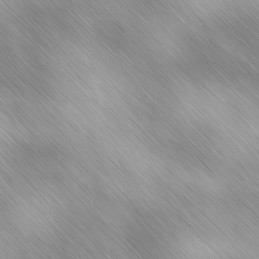
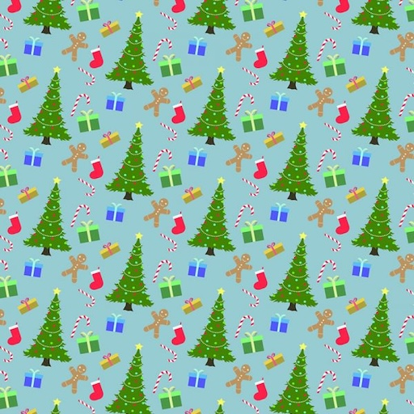
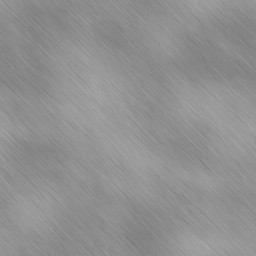
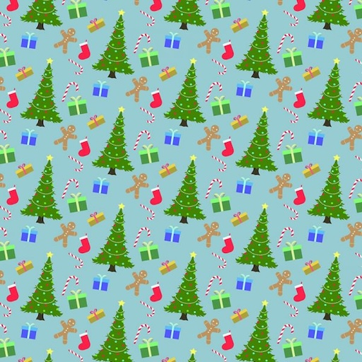
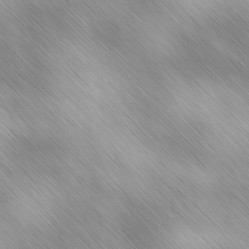
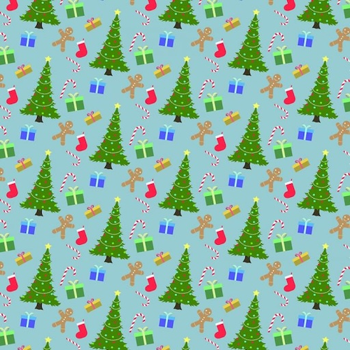

 
Key Bindings to move chair
'z': Rotate Around X
'x': Rotate Around Y
'c': Rotate Around Z
'j': Translate Left on X
'l': Translate Right on X
'i': Translate Up on Y
'k': Translate Down on Y

 


